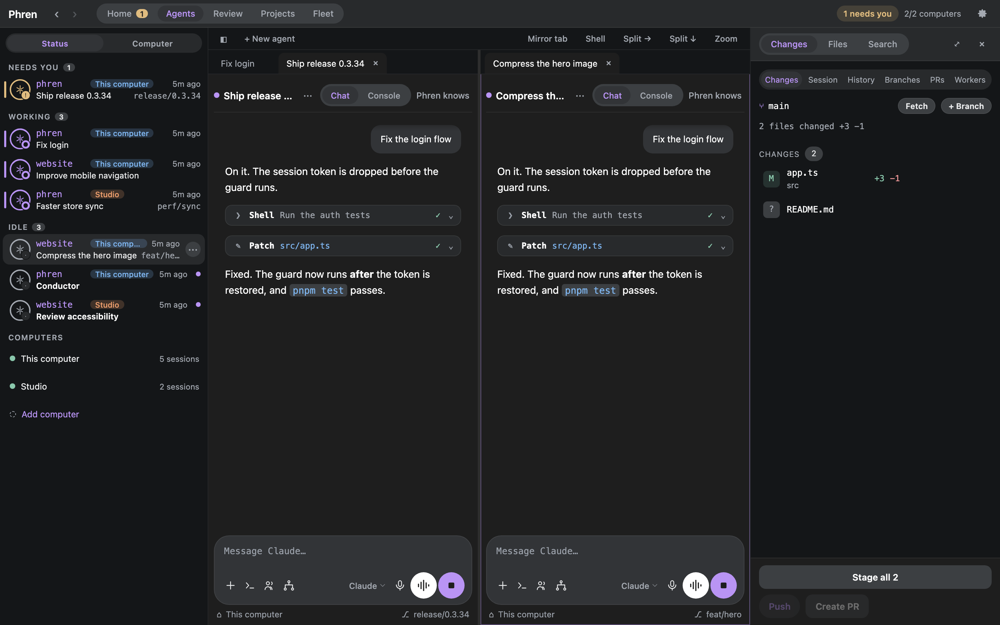
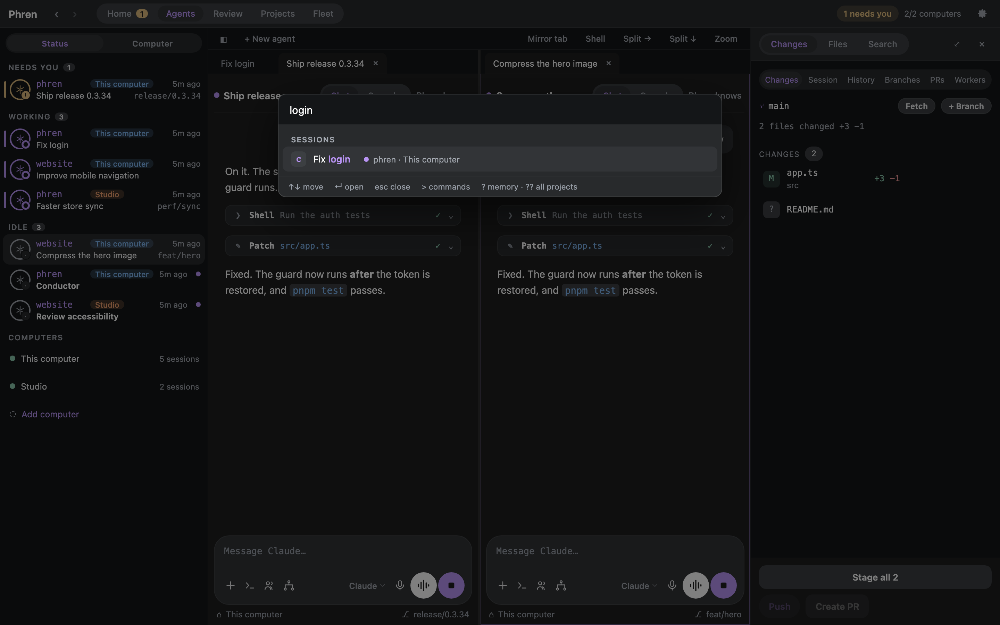
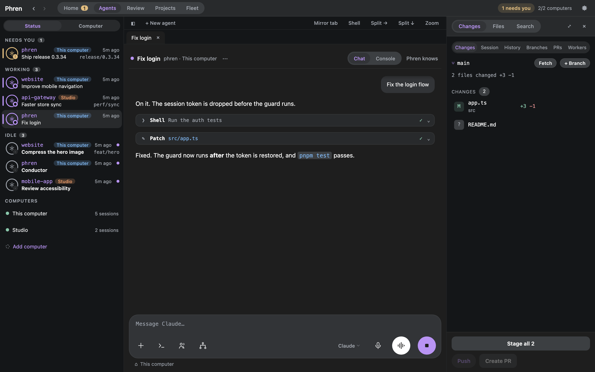
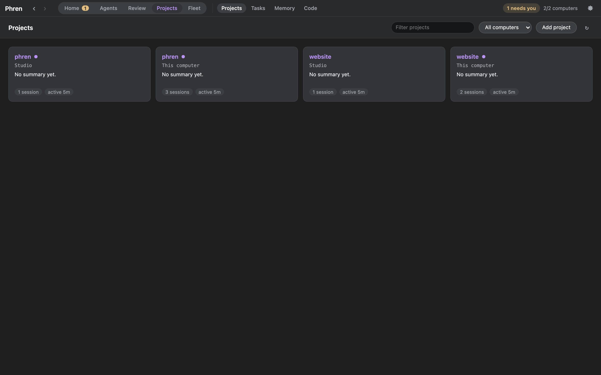
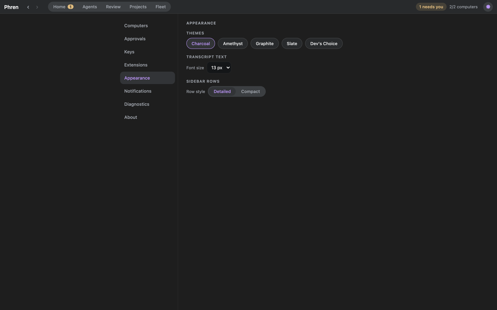
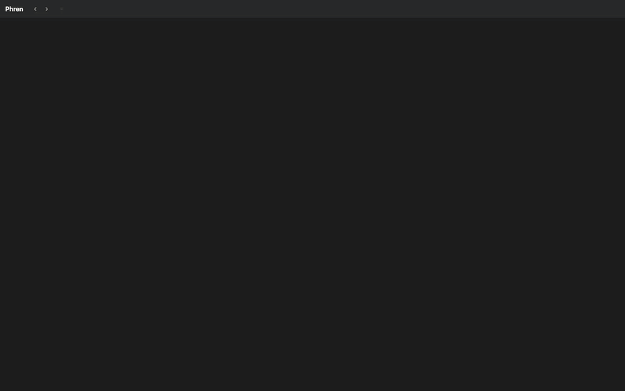

Every computer.
One cockpit.
Phren desktop shows what needs you, the agents that are working and your conductor, across every computer you run agents on. It does everything the phone app does, and adds tiled chats and consoles, a review station and a code editor.
Version 0.1.14 · macOS, Windows, Linux · installers on GitHub releases
Screenshots use sample projects and sample computers.

What's in it





Flows
Switch between recent chats
Hold Ctrl and press Tab to see your last eight chats and their status. Tab and Shift+Tab move, releasing Ctrl opens, Esc cancels.
Find in a chat
Cmd/Ctrl+F searches the open conversation and steps through the matches.

Sections
The titlebar has Home, Agents, Review, Projects and Fleet, with Settings behind the gear.
- Home: the conductor, who needs you (Enter approves, D denies, O opens), what is working, the scheduled prompts that run next and your active tasks. Further down: open pull requests, what you and your agents saved today, and each computer's load.
- Agents: sessions by status or computer, tiled chats and consoles, and a tool panel for Changes, Files and Search.
- Review: worker returns with reports and diffs, and open pull requests with their checks.
- Projects, with Tasks, Memory and Code beside it: every project with its summary and counts, tasks with readiness, findings and the review queue, and what changed in the code index.
- Fleet: the Conductor with its dispatches, returns and grants, Schedules with run now, and Previews, every computer's local web servers and simulators.
- Continue in… (a session's menu): hand a chat to another Claude account, harness or computer with a written hand-off.
Install
Download the newest build from the latest release.
- macOS, Apple Silicon: Phren-mac-arm64.dmg. Open it and drag Phren to Applications. The build is not signed with a Developer ID yet, so macOS blocks the first open: choose Open Anyway in System Settings › Privacy & Security.
- Windows, x64: Phren-win-x64.exe. It installs for your user. SmartScreen asks first: choose More info, then Run anyway.
- Linux, x86-64: Phren-linux-x86_64.AppImage.
chmod +xit and run it. AppImages need FUSE 2.
The app brings its own Node. It needs this computer's Hook (the phren CLI with its Hook running), plus ssh for other computers and Herdr or tmux for consoles. Link another computer with Settings › Computers. The desktop has its own SSH key, separate from the phone's, and you can revoke it per computer.
Updates arrive as a chip in the titlebar; click it for What's new. The full guide covers keys, tiles, notifications and trust and safety.